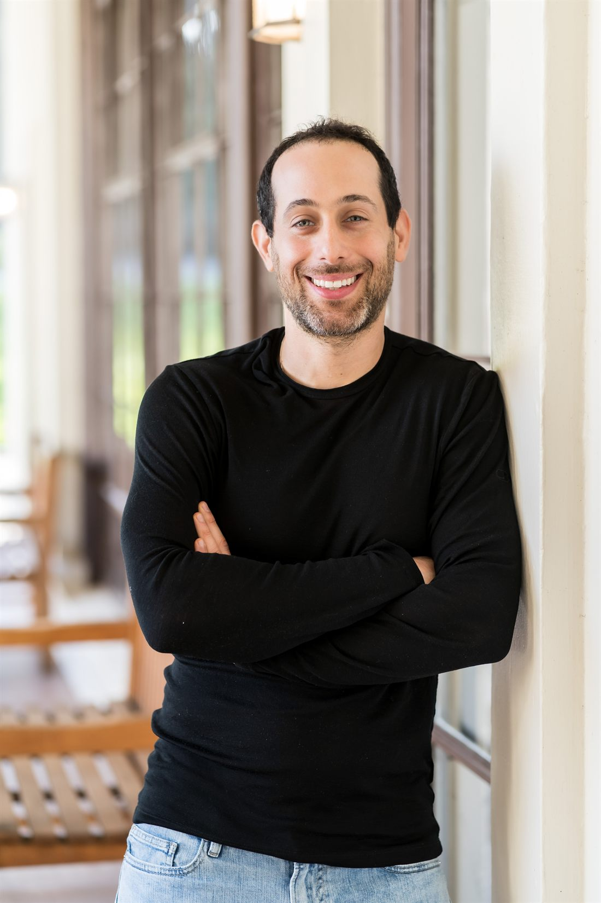

Hi, I'm Oded. I am the Founder and Executive Director of Scrutinize, a nonprofit using data, AI, and legal research to make state courts more transparent and accountable.
I graduated from Harvard College and Harvard Law School and launched Scrutinize with support from Harvard Law School's Public Service Venture Fund and Emergent Ventures. Our work won third place in Ironclad's 2025 Legal AI Innovators Award, has been published in the Journal of Law and Courts, and covered by New York Times, WNYC, and the New York Law Journal.
Visit Scrutinize or find me on LinkedIn.